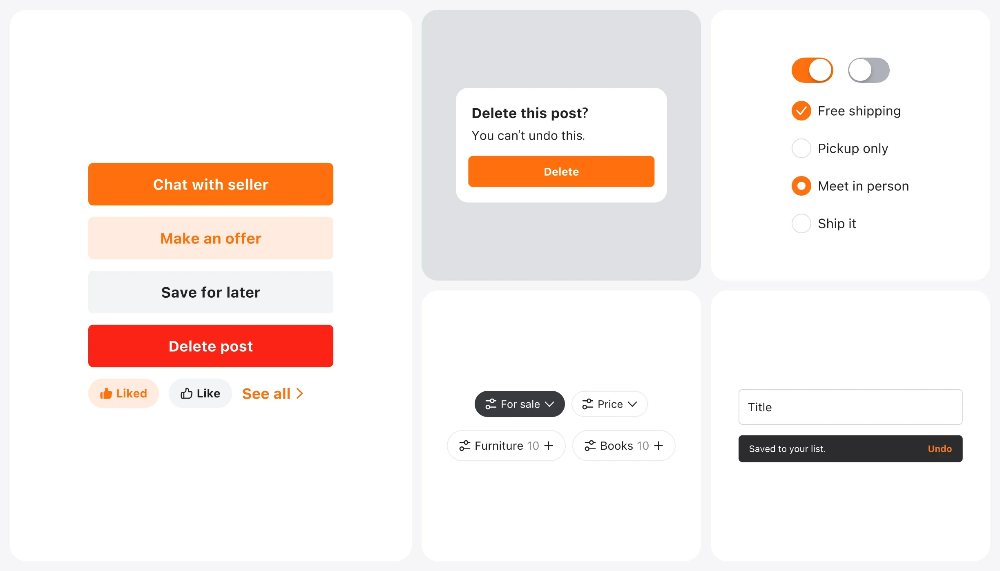
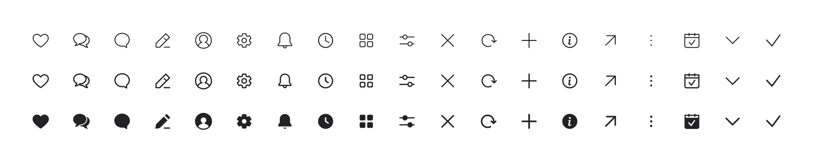
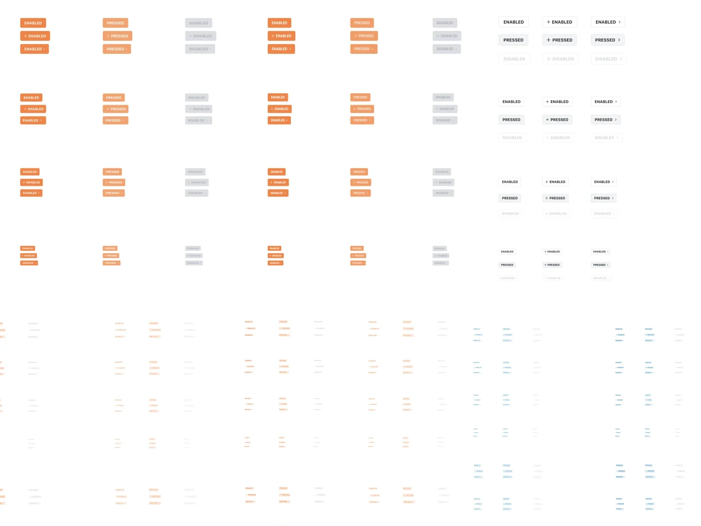
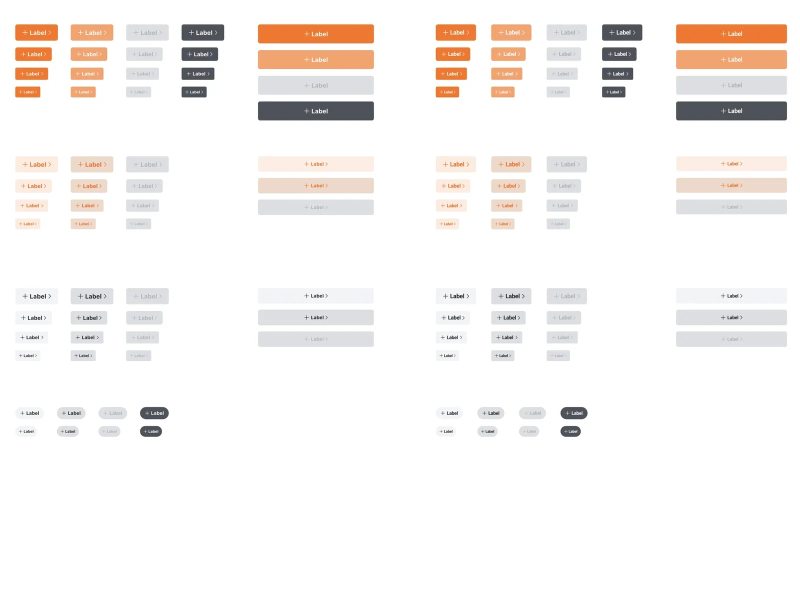
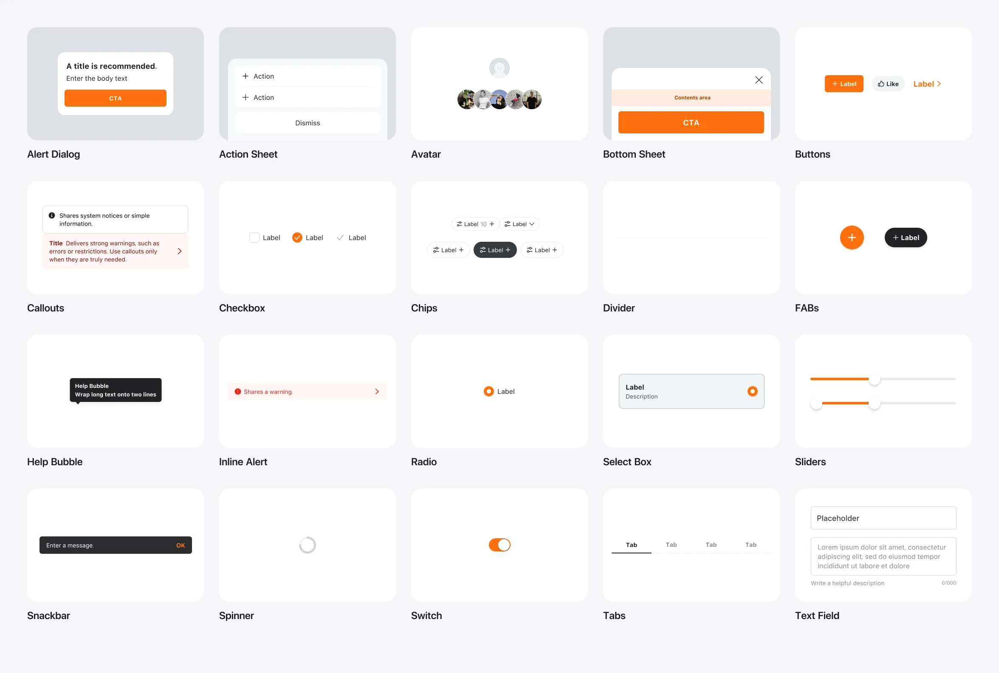
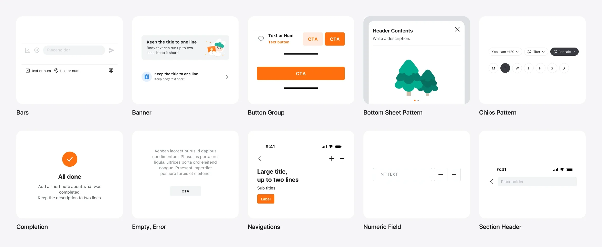

Building Karrot’s design system from scratch, and getting the whole company to use it.

Give every Karrot team one design language, so they stop rebuilding the same UI and ship faster.
By 2022, Karrot was in its seventh year. Squads had moved fast to grow, and that left debt in both design consistency and code. The old Figma library alone had 1,130 button variants. A design system team was formed to make work faster and the app consistent, and I joined it in April 2022.
With two other designers, two frontend engineers and native engineers, we built SEED from scratch: the foundations of typography, colour and icons, then components and patterns, with a guideline for each. Then we drove its adoption across the company.
I designed foundations, components and patterns with the team, built over half of the components and templates, and wrote most of the guidelines.
Take the same UI off their plates, so they can focus on the product.
Make quick improvements and MVP tests possible, without waiting on new UI.
Consistent, accessible UI for Karrot’s wide range of users, better without anyone noticing.
Looking at a component alone didn’t tell people how to use it, and designers and engineers meant different things by “component”. We studied Atomic Design, Apple, Adobe Spectrum, Material and Shopify Polaris. Each drew the lines differently, so we drew ours around the people using each layer.
The base everything is built on.
The smallest unit. It can’t be split any further, and it’s the same in every service.
Components combined for a job, with a service’s intent built in.
So we split the library into two Figma files. App Components is the source of truth engineers build from. App Pattern lets product designers find a ready-made answer for a new screen, an improvement or an MVP, and see how to use it on one page.
Every component and pattern sits on three foundations. Type uses one scale with the same names on iOS and Android, from h1 at 48 down to label6 at 10, each in bold and regular. Colour has two layers: a scale of raw colours, and semantic tokens on top that components use, so a colour can change in one place. Icons come in three weights.
We also darkened the primary orange to meet accessibility contrast. The stronger colour was tiring in large areas, so we stopped using it for full backgrounds.

The old components had a variant for every type, colour and shape, so designers swapped between hundreds of them to get one button right. In SEED you swap only between the big forms, such as basic, text and icon buttons. Everything else is set in the properties panel.


Primary and secondary now mean importance, not colour. We dropped the blue secondary button, removed the extra-small size because its 11pt text was hard to read and to tap, and folded link buttons into text buttons. Toggle, full-width, floating, stepper and icon buttons were added.
Lists got one structure: a prefix, the item text and an action, with every action on the right.

Consistency is solved in patterns. We rebuilt every existing pattern on the shared components, so most Karrot screens could be made from patterns alone. Version 1.0 added button groups for the bottom of the screen, a tool bar and a reply bar, and a list pattern that stacks up to ten items.

We released SEED 1.0 on June 28, 2022. We framed 1.0 not as finished, but as a promise to own it. From then on, SEED had versions and a schedule: updates every other Thursday, with a heads-up the Tuesday before. Every release came with notes in the Figma files and in a Slack channel, so teams knew what changed and why.
Each component also got a guideline page with use cases, rules, and which platforms had it in code. The roadmap paired the system with tools and teaching: a Figma plugin, a shared asset library and a documentation site, plus sessions for teams.
Selected releases of the App Pattern file, from 1.0 to 1.19 in ten months.
SEED is still Karrot’s design system. It now has a public site at seed-design.io, and later work, such as the Feed Item Card, was built on it.
Versions, a steady release day and clear notes made teams trust that SEED would keep up, so they built on it.
Splitting components and patterns by who uses them made each file the right place to look.
Moving options into properties cut variants by two-thirds or more, without losing anything people needed.
A darker primary passed contrast, but it also meant new rules for where full orange could go.